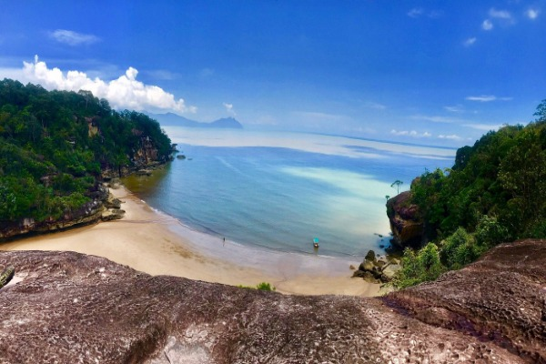
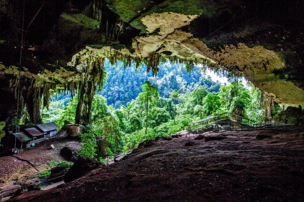
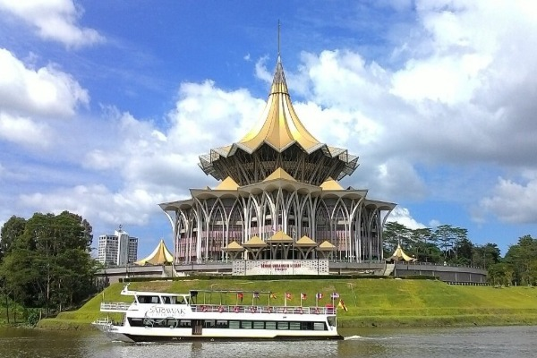

Sarawak is the largest state in Malaysia, known for its rich culture, diverse wildlife, and beautiful natural landscapes. It offers unique experiences for both local and international visitors.

A famous national park known for its diverse wildlife, unique rock formations, and beautiful coastal scenery. It is also popular for jungle trekking and nature exploration.
Learn More
A historical park well known for its limestone caves and important archaeological discoveries, including early human remains. It is surrounded by rich rainforest and natural biodiversity.
Learn More
A scenic riverside area in Kuching that features walking paths, cultural landmarks, food stalls, and relaxing views of the Sarawak River. It is a popular spot for tourists and locals to unwind.
Learn More